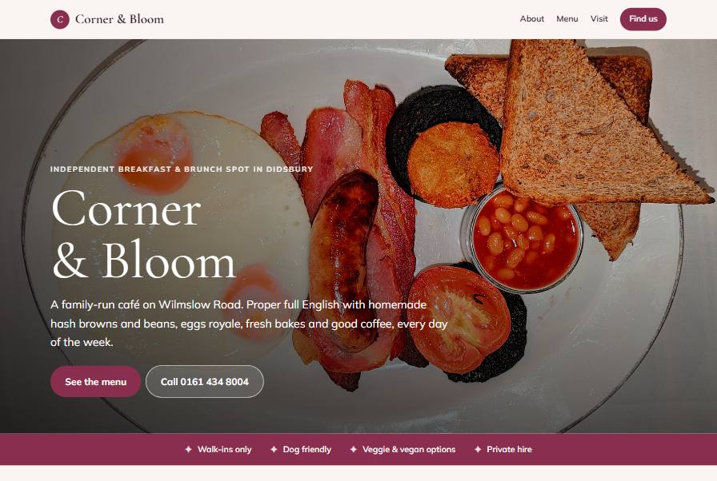

Sites pour commerces de quartier
Des sites qui donnent envie de pousser la porte.
Restaurants, cafés, boulangeries, boutiques : je crée des sites simples, beaux et rapides, pensés pour une seule chose, vous amener des clients.
38maquettes réalisées
7pays
72 hpour être en ligne